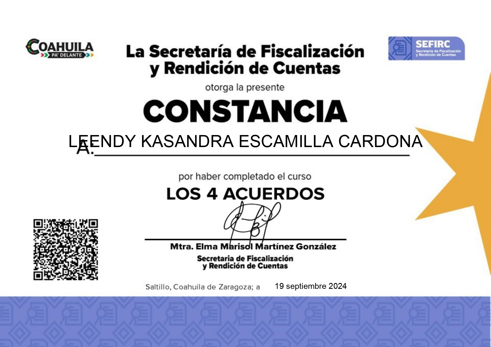
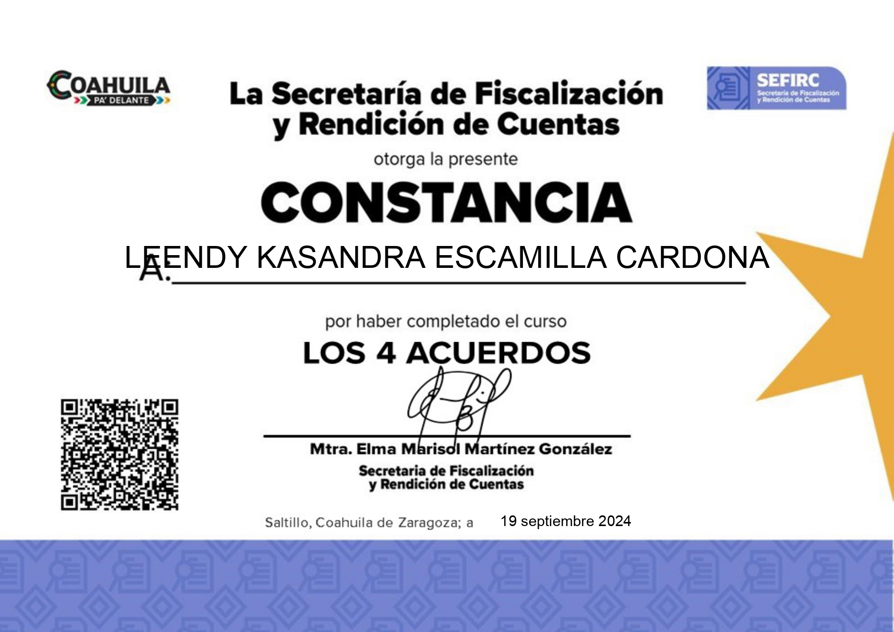
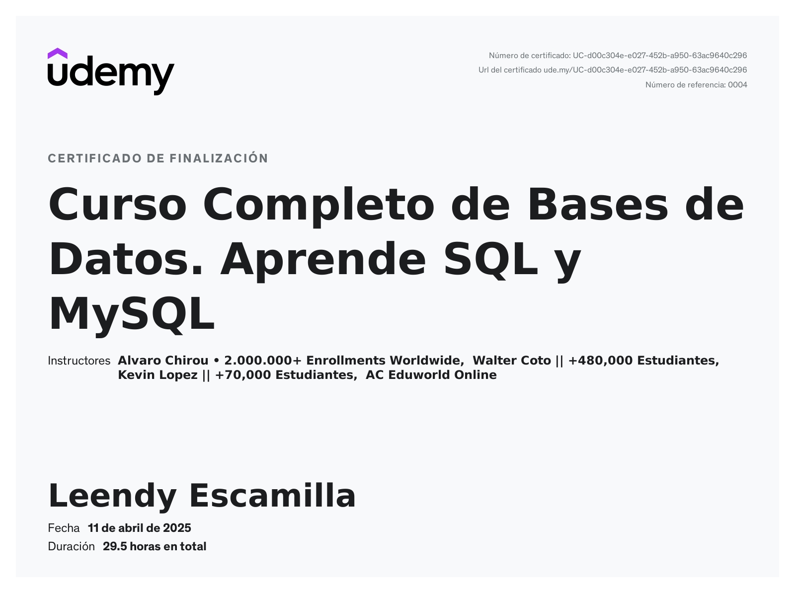
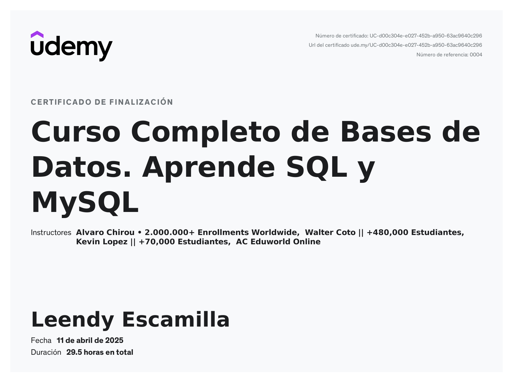

Sobre Mi
Bienvenido(a):
Soy desarolladora front-end, me gusta mucho el ... Un momento, ¿sabes qué es eso, no?
'Desarrollador front-end'. A ver, te explico:
Un desarollador front-end es el encargado de todo lo que puedes ver en un sitio web.
Desde el diseño, los estilos e incluso animaciones del mismo. Básicamente hace que este
luzca bien y sea agradable a la vista de los usuarios (o en teoría debería ser así).
¿Suena bien, no?
Tengo un gran interés en la tecnología y la innovación. Me apasiona aprender y
mejorar constantemente, y estoy comprometida con la excelencia en todo lo que hago.
Me gusta mucho ver peliculas,series y ver los partidos de futbol. Aparte de eso,
también me gusta el ajedrez, leer libros, las fiestas y compartir con mis amigos y familia.
Proyectos
Blog de cafe
Este proyecto fue realizado con HTML, CSS y JavaScript. Es un blog de cafe donde puedes encontrar recetas, tips y mucho más.
Todo Papeleria
Este proyecto fue realizado con HTML, CSS y JavaScript. Es una tienda en línea de papeleria donde puedes encontrar todo lo que necesites para tus trabajos escolares.
Secretaria de Economia
Este proyecto fue realizado con HTML, CSS y JavaScript. Es la pagina oficial de la secretaria de economia donde puedes encontrar información sobre los programas que tienen.
Habilidades
Certificados

 



 
